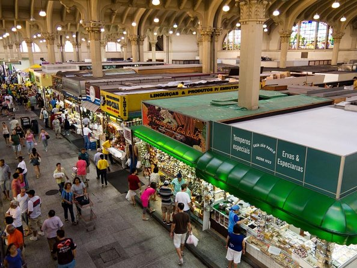
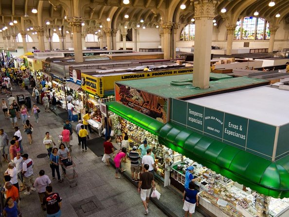

A Avenida Paulista, inaugurada em 1891, é uma das vias mais importantes e emblemáticas de São Paulo. Inicialmente planejada como um bairro residencial de elite, a avenida evoluiu para se tornar um centro cultural e financeiro. Hoje, é o coração de muitas atividades culturais e comerciais, abrigando museus como o MASP (Museu de Arte de São Paulo) e o Centro Cultural Fiesp, além de ser palco de manifestações e eventos importantes.

O Parque Ibirapuera foi inaugurado em 1954 para comemorar o quarto centenário da cidade de São Paulo. Projetado pelo arquiteto paisagista Roberto Burle Marx e o arquiteto Oscar Niemeyer, o parque foi criado para oferecer uma grande área verde em uma das maiores metrópoles do Brasil. Além de suas amplas áreas para lazer e atividades ao ar livre, o parque abriga importantes instituições culturais, como o Museu de Arte Moderna e o Auditório Ibirapuera.
 

O Mercado Municipal de São Paulo, conhecido como Mercadão, foi inaugurado em 1933. Criado para fornecer um espaço centralizado para a comercialização de alimentos frescos, o Mercadão rapidamente se tornou um ícone gastronômico da cidade. Além de seu famoso sanduíche de mortadela, o mercado é conhecido por sua grande variedade de produtos e pela tradição de oferecer ingredientes de alta qualidade para os paulistanos.